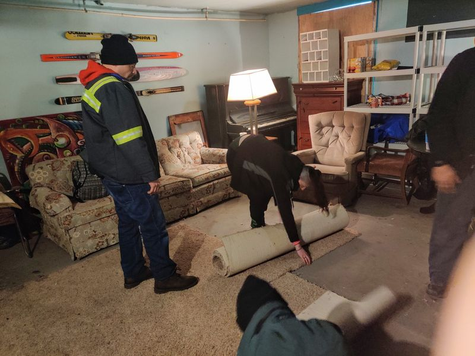

Post 721
Mar 27, 2022 1:34:51pm

Timeline photos
The #nomadicspiritchurch unburdened itself from its carpet today by giving it to Ashley for her tent. We practice letting go of belongings to make ourselves more free.
Back to Index